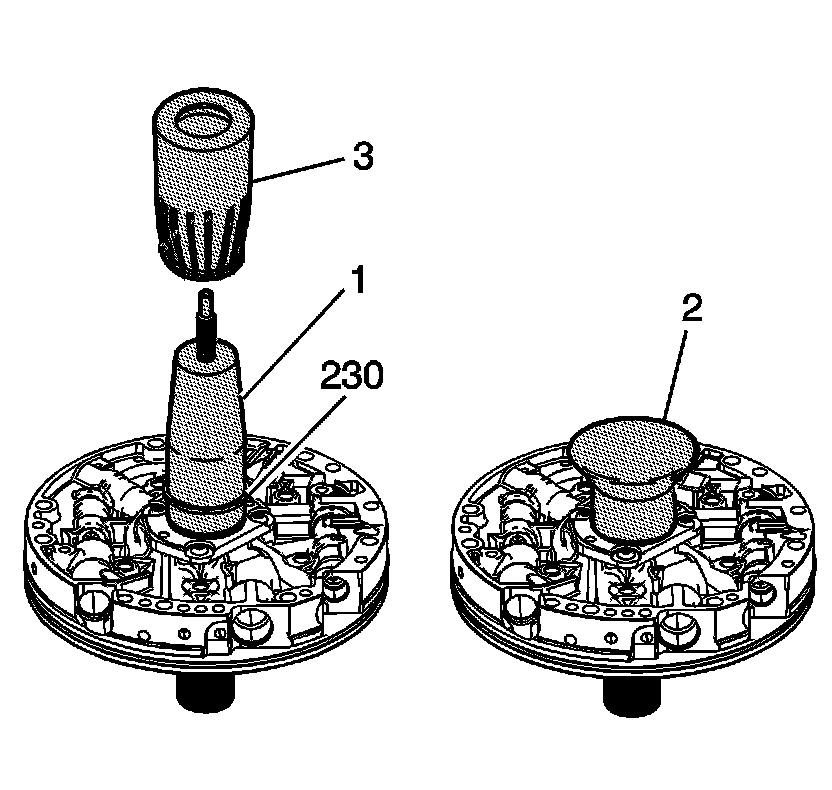
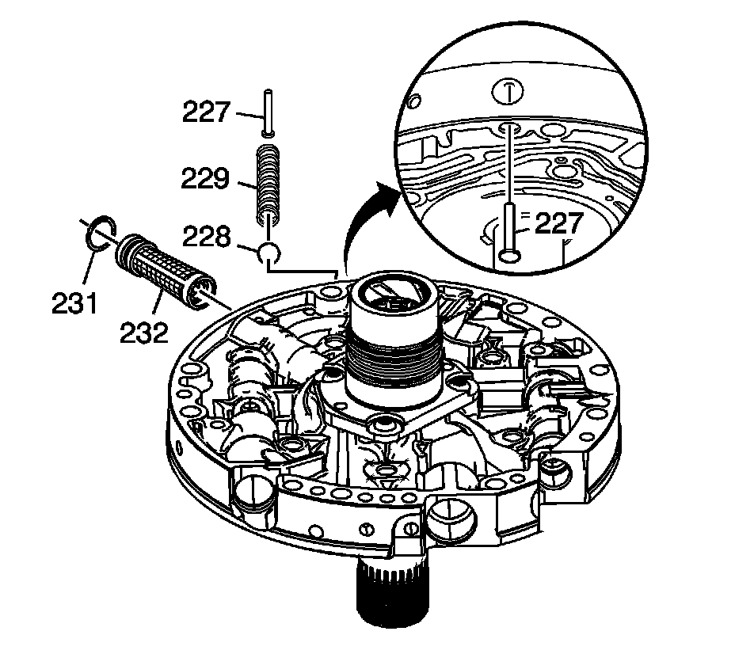
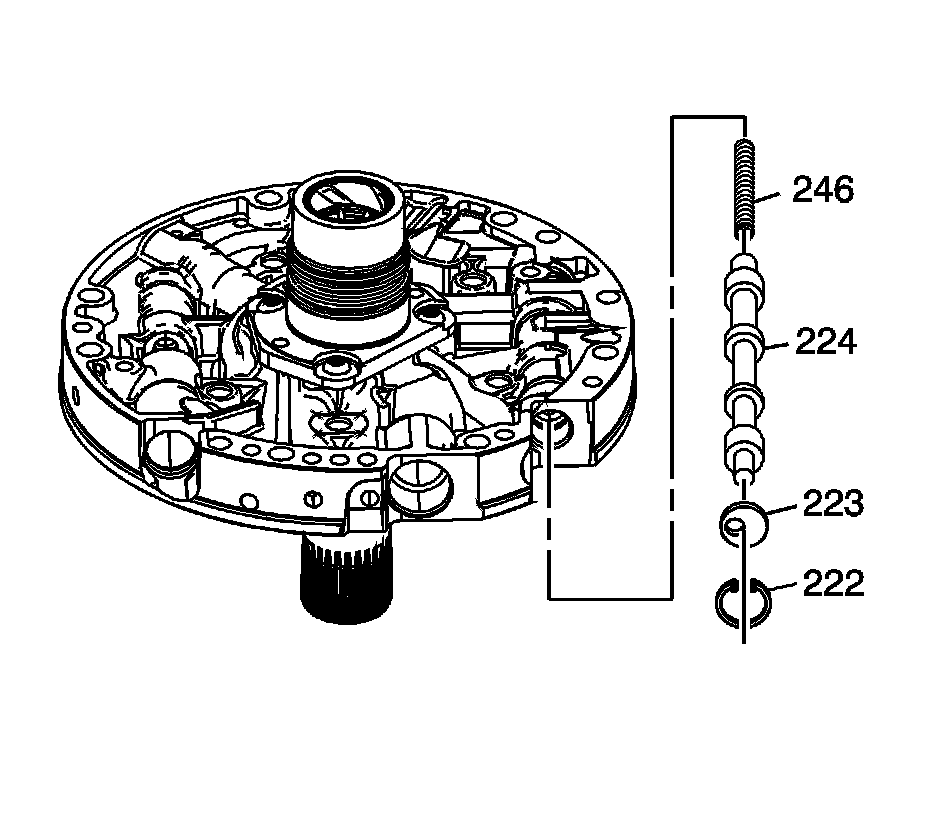
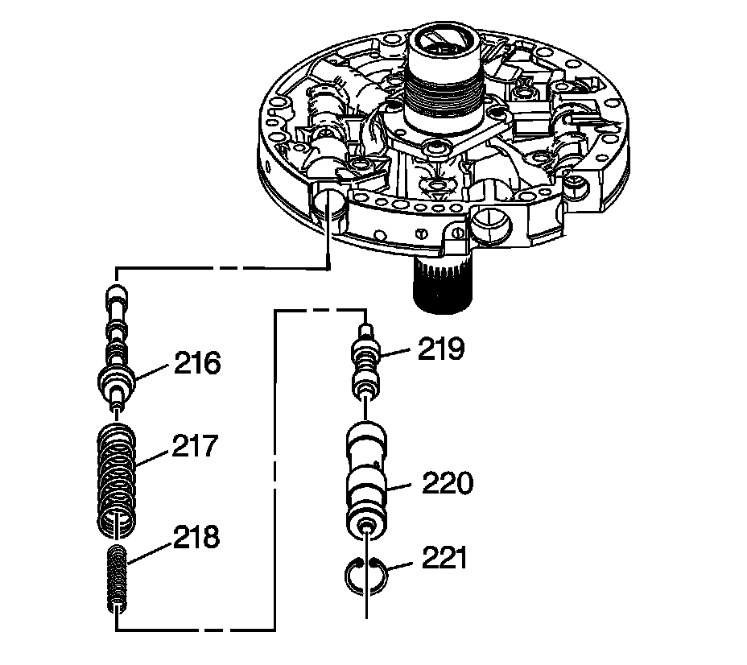

Oil Pump Cover Assemble
Oil Pump Cover Assemble
Tools Required
^ J 38735-3 Pusher
^ J 39855 Stator Shaft Seal Installer

1. Using the J 39855-1 (1) which is part of kit J 39855 and the J 38735-3 (3), install the stator shaft oil seal rings (230).
2. Place J 39855-2 (2) which is part of kit J 39855 over the seals.
3.
Leave J 39855-2 (2) which is part of kit J 39855 on the stator shaft until just before the pump is to be installed into the transmission.

4. Install the pressure relief ball (228) and pressure relief spring (229).
5. Install the pressure relief bolt rivet (227).
6. Install the oil pump cover screen seal (231) on the oil pump cover screen (232).
7. Install the oil pump cover screen (232) into the pump cover.

8. Install the converter clutch valve spring (246).
9. Install the converter clutch valve (224).
10. Install the stop valve (223) and the oil pump converter clutch valve retaining ring (222).

11. Install the pressure regulator valve (216).
12. Install the pressure regulator isolator spring (218) and the pressure regulator valve spring (217).
13. Install the reverse boost valve (219) in the reverse boost valve sleeve (220).
14. Install the reverse boost valve and sleeve in the pump cover.
15. Install the oil pump reverse boost valve retaining ring (221).